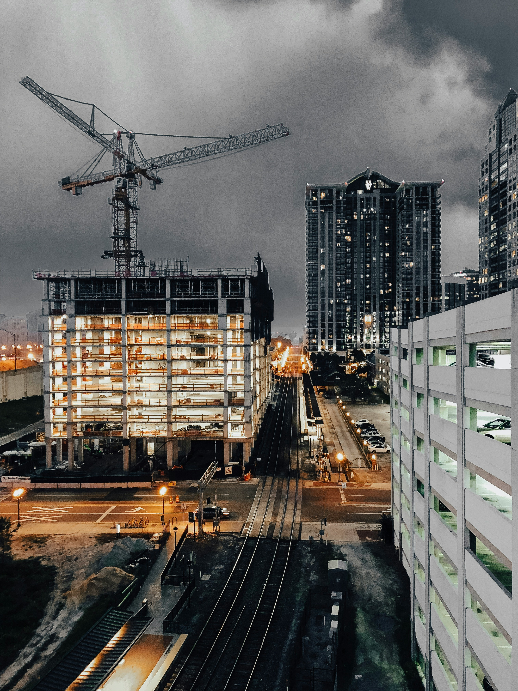

PROJECT & WORK EXPERIENCE
L&T Saudi Arabia LLC. (NOVEMBER 2023 to 25th March 2025)
(Position: Civil Engineer) At 380kV Substation & Transmission Line Shighri NEOM NGHC Project (Saudi Arabia)
Responsibilities:
- Planning, Scheduling & Monitoring the Project and preparing the budget schedule.
- Supervising Labor & sub-contractors, material management on site along with measurements With Client and Other Engineer.
- Estimating Material, maintaining as per BOQ schedule & following up the material from manufacturer & as per client certified vendors stock to yard
- Preparation of proposals, Agendas, Monthly & daily work progress reports.
- Handling site execution activities-coordination with all concern teammates at site, office etc. Responsible for certifying bills, measurement sheet etc.
- Survey & Level Checking of foundation bolt, layout marking, deployment of labor, making work schedule of completion, quality check such as cube testing, sieve analysis, pile layout marking & checking.
- Template & Stub setting as per drawing
IKAD MALDIVES PVT LTD. (May 2023 to October 2023)
(Position: Civil Engineer) UPGRADING INTERIOR RENNOVATION WORKS TO EXISTING WATER VILLAS AT KANUHURAA MALDIVES, LH. ATOLL (ST00053975)
Responsibilities:
- Planning, Scheduling & Monitoring the Project and preparing the budget schedule.
- Supervising Labor & sub-contractors, material management on site along with measurements With Client and Other Engineer
- Estimating Material, maintaining as per BOQ schedule & following up the material from manufacturer & as per client certified vendors stock to yard
- Preparation of proposals, Agendas, Monthly & daily work progress reports.
- Handling site execution activities-coordination with all concern teammates at site, office etc. Responsible for certifying bills, measurement sheet etc.
- Survey & Level Checking of foundation bolt, layout marking, deployment of labor, making work schedule of completion, quality check such as cube testing, sieve analysis, pile layout marking & checking. Template & Stub setting as per drawing
Modina India (Jul 2022 to May 2023)
(Position: Civil Engineer) Civil and Erection work for construction of 765 D/C Lakadia-Vadodara line at Dholera Owned by Lakadia Vadodara Transmission Project Limited (LVTPL), being executed by Sterlite Power Transmission Limited.
Responsibilities:
- 132KV Gantry& equipment foundations, Control room building, Cable trench, sump house, pump house, harvesting pits, Road, Culvert, Open Foundation, retaining wall, RCC Approach Road, Pre-cast Boundary wall, Chain-link Fencing work, pale fencing work with all necessary items which is construct in substation & take approval from client, make RA Bills, Site co-ordination for execution of construction activity with client & sub-Contractors. Like Pile layout & marking checking, and concrete all activity of related to pile as well as open foundation &store building work, works in over water location, water logged foundations, checking to client & execute as per approved drawings for QA/QC documents of the complete project, including certificates, calibration, test results, inspection requests, non-compliance reports and site instruction/observations, permanent materials delivered, and other important QA/QC documents.
- Planning, Scheduling & Monitoring the Project and preparing the budget schedule.
- Supervising Labor & sub-contractors, material management on site along with measurements With Client and Other Engineer.
- Supervising Labor & sub-contractors, material management on site along with measurements With Client and Other Engineer.
- Preparation of proposals, Agendas, Monthly & daily work progress reports.
- Handling site execution activities-coordination with all concern teammates at site, office etc. Responsible for certifying bills, measurement sheet etc.
- Survey & Level Checking of foundation bolt, layout marking, deployment of labor, making work schedule of completion, quality check such as cube testing, sieve analysis, pile layout marking & checking. Template & Stub setting as per drawing
Gawar Construction Ltd. Sublet Ganesh Builders. (Jun 2021 to Jul 2022)
(Position: Civil Engineer) Construction of 6-lane access-controlled Greenfield highway from km 140+000 to km 170+000 of Sangariya (near Chautala)-Rasisar (near Bikaner) section of NH-754K as a part of Amritsar -Jamnagar Economic Corridor in the State of Rajasthan on EPC mode under Bharatmala Pariyojana (Phase-1) (AJ/SR-Package-6).
Responsibilities:
- Responsible for Road, Culvert, Pile Foundation, retaining wall, Approach Road, Boundary wall, Chain-link Fencing work, pale fencing work with all necessary items which is construct in substation & take approval from client, make RA Bills, Site co-ordination for execution of construction activity with client & sub-Contractors. Like Pile layout & marking checking, pile depth, diameter of pile, pile Bulb, steel cage of pile and concrete all activity of related to pile as well as open foundation &store building work, water logged foundations, Conduct daily client inspection
- Planning, Scheduling & Monitoring the Project and preparing the budget schedule.
- Supervising Labor & sub-contractors, material management on site along with measurements With Client and Other Engineer.
- Estimating Material, maintaining as per BOQ schedule & following up the material from manufacturer & as per client certified vendors stock to yard
- Preparation of proposals, Agendas, Monthly & daily work progress reports.
LODHA THE WORLD TOWERS. (Aug 2019 to May 2021)
(Position: Civil Engineer)
Responsibilities:
- Planning, Scheduling & Monitoring the Project and preparing the budget schedule.
- Supervising Labor & sub-contractors, material management on site along with measurements With Client and Other Engineer.
- Estimating Material, maintaining as per BOQ schedule & following up the material from Suppliers & as per client certified vendors stock to yard.
- Monitoring of Supply & Running Bills, Sub-contractors Bills and documentation work.